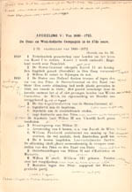

De verandering waargenomen
A.E. Cohen als historicus en universitair bestuurder
Tentoonstelling in de Universiteitsbibliotheek te Leiden, van 28 november 2003 tot en met 4 januari 2004.
Tentoongestelde stukken
2. Studie geschiedenis te Leiden
Cohen studeerde geschiedenis en wilde zich specialiseren in de middeleeuwen. Maar hij was realistisch genoeg om in te zien dat je daar maatschappelijk niet ver mee kwam. Daarom deed hij Nederlandse taal- en letterkunde als uitgebreid bijvak, zodat hij ook in dat vak onderwijsbevoegdheid kreeg. Als een van de weinige historici koos hij sociologie als bijvak. Als corpslid was hij geen kroegtijger. Als student viel hij op door zijn ernst en degelijkheid – niet voor niets nodigde de secretaris van curatoren hem uit eens van gedachten te komen wisselen over een delicaat onderwerp: of de hoogleraar Colenbrander nog wel als zodanig te handhaven was.
| 2.1.
Studentenkaart [UBL, Archief Universiteit, Studentinschrijvingen,
doos 349]
Vermeld zijn de betalingen van het collegegeld (fl. 310 per jaar) en de examens: candidaats geschiedenis 18 juni 1935, doctoraal geschiedenis 10 juli 1940, promotie 18 augustus 1941. |
|
| 2.2. Inschrijvingsformulier met persoonlijke gegevens en pasfoto, 23 september 1932 [UBL, Archief Universiteit, Studenteninschrijvingen, doos 198] | |
| 2.3. Ontgroend! [AEC] | |
 |
2.4. Groenenboekje [AHM] ¶ Op de eerste bladzijde van het groenenboekje had een student geschreven: `moet gepakt worden’, wat er door Cohens `patroon’ Schuurs is uitgescheurd
. |
 |
2.5. Inschrijvingsformulier met persoonlijke gegevens en pasfoto van zijn jongere broer Ernst Max Cohen, geboren 26 mei 1916, ingeschreven 29 september 1939 [UBL, Archief Universiteit, Studenteninschrijvingen, doos 282] |
|  | 2.6. J.W. Pik, Hulpboekje bij de studie van de vaderlandsche geschiedenis. Zesde, herziene en bijgewerkte druk (Zwolle: W.E.J. Tjeenk Willink, 1927) [AvdL] |
| 2.7. Dolf Cohen als een
vriendelijke zeerover. [AHM]
Naar aanleiding van de muiterij op de Zeven Provinciën verkleedden de eerstejaars corpsleden zich bij de diesviering op 8 februari 1933 als zeerovers. Cohen vierde van rechts. |
|
| 2.8. P.J. Idenburg,
secretaris van curatoren, aan A.E. Cohen, 19 november 1936. [AEC]
¶ Idenburg nodigde Cohen uit te komen spreken `over een aangelegenheid van vertrouwelijken aard betreffende de Faculteit der letteren’. De heikele kwestie betrof een mogelijk ontslag van Colenbrander: was hij in zijn positie nog wel te handhaven? Cohen heeft hem bij die gelegenheid verontschuldigd wegens zijn ouderdom.
|
|
| 2.9. H.T. Colenbrander aan A.E.
Cohen, 27 oktober 1939. [AEC]
¶ Met een Franse slag maakte Colenbrander zich van Cohens doctoraalscriptie af: `Zeer waarde Heer Cohen. Uw goed gecomponeerde en degelijk bewerkte scriptie heb ik met genoegen gelezen en acht ze als doctoraalscriptie volkomen voldoende. In het bijzonder Uw slotconclusiën lijken mij juist. Bijzondere aanmerkingen heb ik er niet op, en ik vergenoeg mij dus met de, erkentelijke, terugzending’. |
|
| 2.10. Twee foto’s van A.E. Cohen en A.E. van Braam Houckgeest (in uniform) als paranimfen de begeleider van S.F. Ornstein, op weg naar diens promotie in vooroorlogse stijl, 18 januari 1940 [AHM] | |
| vorige pagina | volgende pagina |